Modification | |
| Prev | Triangulations | Next |
There are many ways of modifying a 3-manifold triangulation. Many of these can be found in the various menus, which appear when you open a triangulation for viewing.
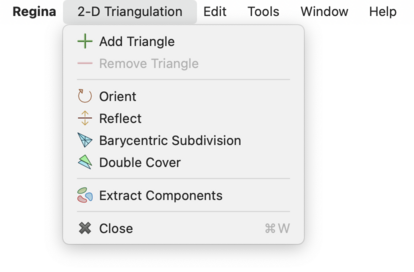 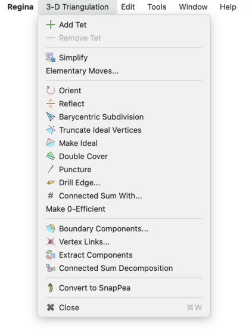 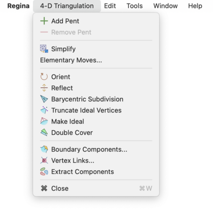
Caution
If you open one triangulation for viewing but then select another in the packet tree, all modifications will apply to the triangulation that you have open for viewing.
The simplest way to modify a triangulation is to open the Gluings tab and edit the facet gluings table directly. This allows you to change the gluings between triangles, tetrahedra or pentachora for 2-, 3- and 4-manifolds respectively. See the notes on viewing facet gluings for details on how to read the table.
You can add and remove triangles, tetrahedra or pentachora using the Add … and Remove … buttons above the table (the Add button is marked Add Triangle, Add Tet or Add Pent for 2-, 3- and 4-manifolds respectively, and likewise for the Remove button). To change the gluings between existing triangles, tetrahedra or pentachora, just type the new gluings directly into the table. If you want to remove a gluing (i.e., make a facet part of the triangulation boundary), simply delete the contents of the cell.
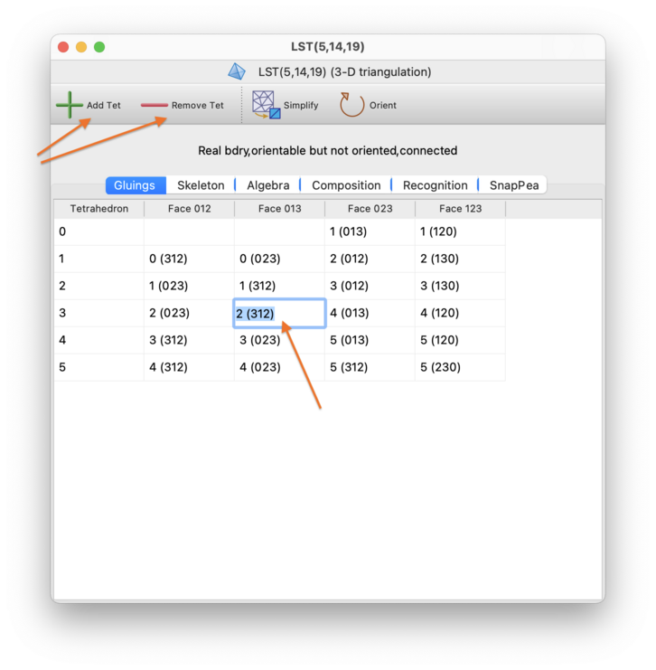
If you like, you can also name triangles, tetrahedra or pentachora to help keep track of their roles within the triangulation. Click on the cell in the leftmost column (containing the number that identifies that triangle, tetrahedron or pentachoron), and type a new name directly into the cell.
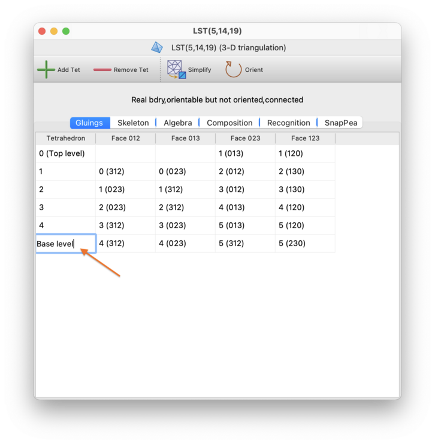
Regina has a rich set of fast and effective moves for simplifying a triangulation without changing the underlying manifold. If you press the button (or select →), then Regina will use a combination of these moves to reduce the triangulation to as few tetrahedra (in 3-D) or pentachora (in 4-D) as it can [Bur13]. This procedure is always fast and often very effective, but there is no guarantee that this will produce the smallest possible triangulation: Regina might get stuck at a local minimum from which it cannot see how to escape.
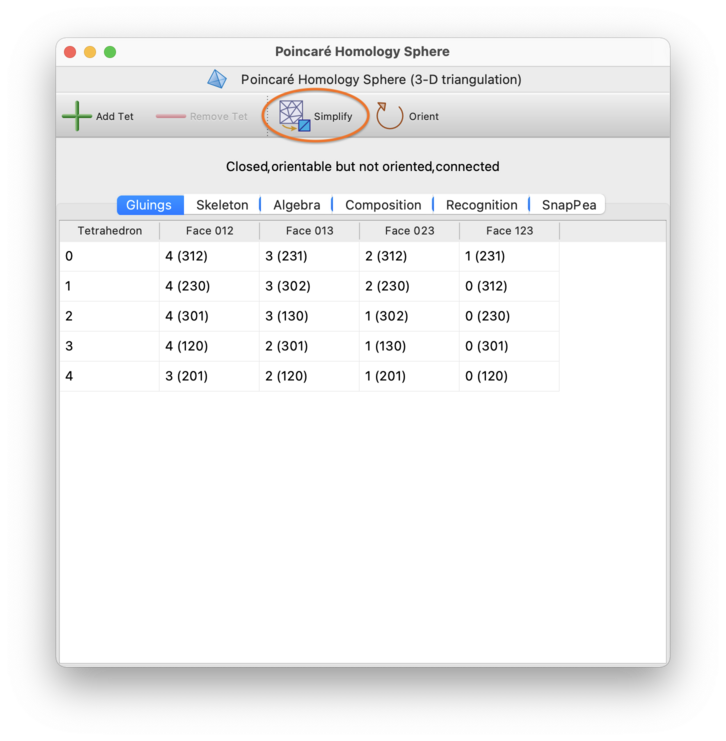
If your triangulation has boundary, this routine will also try to make the number of boundary triangles (in 3-D) or boundary tetrahedra (in 4-D) as small as it can, though again there is no guarantee of reaching a global minimum.
Note
If your triangulation is oriented, then the fast simplification process described above will preserve the orientation of your triangulation. This is not true of the exhaustive process described below.
If Regina cannot simplify the triangulation immediately using its fast heuristics, then it will offer to perform a slower, more exhaustive search. Press the Try harder button, as shown below:
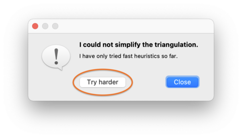
At this point, Regina will begin an exhaustive search through the Pachner graph (this is essentially the graph that relates all triangulations of the underlying manifold through Pachner moves):
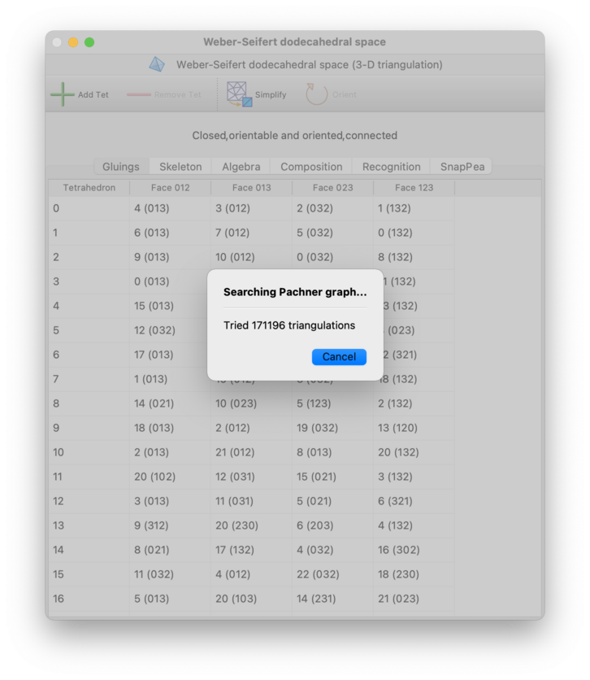
You can stop this search at any time by pressing the Cancel button.
Since the Pachner graph is infinite, Regina will only search through intermediate triangulations of a certain maximum size. If this still fails, it will offer to search further, and you can press Keep trying to continue the search using larger intermediate triangulations than before. This cycle of ever-expanding searches will continue for as long as you like: Regina will only stop if you decline to keep searching, or you cancel a search while it is running, or it finds a smaller triangulation.
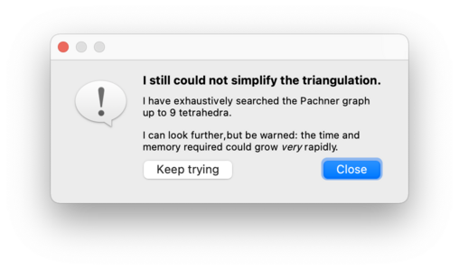
For 3-manifolds, Regina will only try 2-3 and 3-2 Pachner moves in this exhaustive search. For 4-manifolds, Regina will try all possible Pachner moves (1-5, 2-4, 3-3, 4-2, and 5-1).
Warning
When searching the Pachner graph, both the time and memory consumption grow at a super-exponential rate relative to the number of tetrahedra. If you continue to press Keep trying over and over, you may well run out of time or memory (or both).
Warning
Unlike the fast simplification process when you first press the Simplify button, this exhaustive simplification process does not preserve the orientation of an oriented triangulation.
Instead of using automatic simplification, you might wish to modify your triangulation manually one step at a time. You can do this using elementary moves, which are small local modifications to the triangulation that preserve the underlying manifold. To perform elementary moves, select → from the menu.
This will bring up a box containing all the elementary moves that can be performed upon your triangulation. There are many different types of moves available, and this list may continue to grow with future releases of Regina.
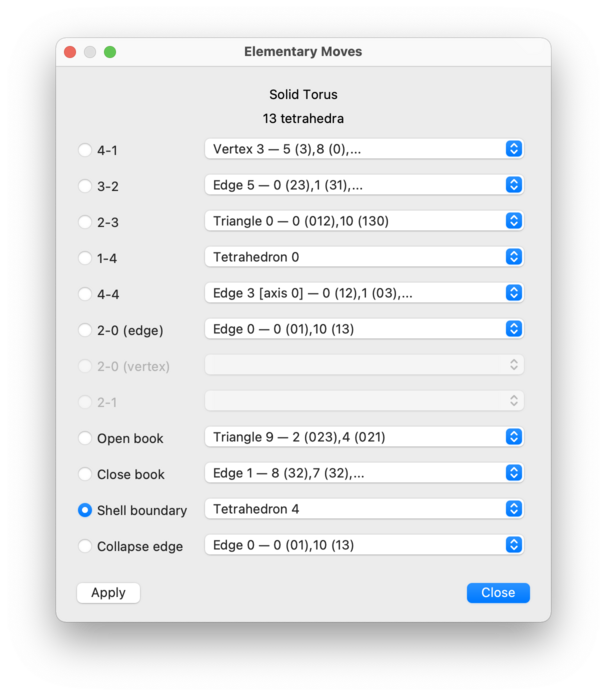
For each type of move, you will be offered a drop-down list of locations at which the move can be performed. If a move is disabled (greyed out), this means there are no suitable locations in your triangulation for that move type.
Select a move, and then press to perform it. You may continue to apply one move after another. When you are done, press to close the elementary move box.
Note
If your triangulation is oriented, then every move that is offered will preserve the orientation of your triangulation.
We only give a brief summary of the various types of move here. The full details are in the API documentation, and for 3-manifolds you can also read about them in plain English [Bur13].
The available moves for 3-manifolds (as illustrated above) are:
- 4-1 Move
Replaces four tetrahedra meeting at a degree 4 vertex with a single tetrahedron.
- 3-2 Move
Replaces three tetrahedra joined along a degree 3 edge with two tetrahedra joined along a triangle.
- 2-3 Move
Replaces two tetrahedra joined along a triangle with three tetrahedra joined along a degree 3 edge.
- 1-4 Move
Replaces one tetrahedron with four tetrahedra that meet at a new internal degree 4 vertex.
- 4-4 Move
Replaces four tetrahedra joined along a degree 4 edge with four tetrahedra joined along a new degree 4 edge that points in a different direction.
- 2-0 Move (Edge)
Takes two tetrahedra joined along a degree 2 edge and squashes them flat.
- 2-0 Move (Vertex)
Takes two tetrahedra that meet at a degree 2 vertex and squashes them flat.
- 2-1 Move
Merges the tetrahedron containing a degree 1 edge with an adjacent tetrahedron.
- Open Book
Takes an internal triangle with two boundary edges and “unglues” that triangle, creating two new boundary triangles and exposing the tetrahedra inside to the boundary.
- Close Book
Folds together two adjacent boundary triangles around a common boundary edge, with the result of simplifying the boundary.
- Shell Boundary
Removes an “unnecessary tetrahedron” that sits along the boundary of the triangulation.
- Collapse Edge
Takes an edge between two distinct vertices and collapses it to a point. Any tetrahedra that contained the edge will be “flattened away”.
For 4-manifold triangulations, Regina offers a similar selection of moves, as illustrated below:
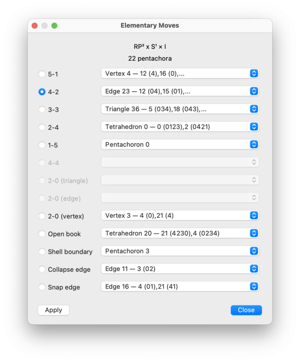
In brief, these 4-manifold moves are:
- 5-1 Move
Replaces five pentachora meeting at a degree 5 vertex with a single pentachoron.
- 4-2 Move
Replaces four pentachora joined along a degree 4 edge with two pentachora glued together along a tetrahedron.
- 3-3 Move
Replaces three pentachora joined along a degree 3 triangle with three pentachora joined along a new degree 3 triangle that is aligned in a different direction.
- 2-4 Move
Replaces two pentachora glued together along a tetrahedron with four pentachora joined along a new degree 4 edge.
- 1-5 Move
Replaces one pentachoron with five pentachora that meet at a new internal degree 5 vertex.
- 4-4 Move
Replaces four pentachora joined along a degree 4 edge with four pentachora joined along a new degree 4 edge that is aligned in a different direction.
- 2-0 Move (Triangle)
Takes two pentachora joined along a degree 2 triangle and squashes them flat.
- 2-0 Move (Edge)
Takes two pentachora joined along a degree 2 edge and squashes them flat.
- 2-0 Move (Vertex)
Takes two pentachora that meet at a degree 2 vertex and squashes them flat.
- Open Book
Takes an internal tetrahedron with one, two or three boundary triangles and “unglues” that tetrahedron, creating two new boundary tetrahedra and exposing the pentachora inside to the boundary.
- Shell Boundary
Removes an “unnecessary pentachoron” that sits along the boundary of the triangulation.
- Collapse Edge
Takes an edge between two distinct vertices and collapses it to a point. Any pentachora that contained the edge will be “flattened away”.
- Snap Edge
Takes an edge between two distinct vertices and snaps its endpoints together. This involves taking a triangle that meets this edge and folding the other two edges of this triangle together.
A 3-manifold triangulation is 0-efficient if its only normal spheres and discs are vertex linking, and if it has no 2-sphere boundary components [JR03]. 0-efficient triangulations have significant theoretical and practical advantages, and often use relatively few tetrahedra.
If your triangulation is closed, orientable and connected, you can convert it into a 0-efficient triangulation of the same 3-manifold by selecting →.
If your triangulation represents a composite 3-manifold then it cannot be made 0-efficient—in this case a full connected sum decomposition will be inserted beneath your triangulation in the packet tree, and your original triangulation will be left unchanged.
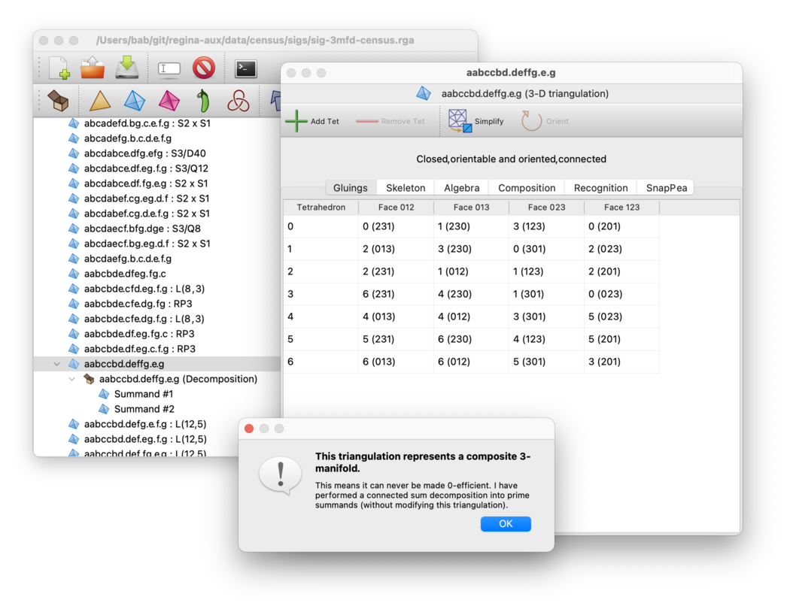
There are also two exceptional prime orientable manifolds that cannot be made 0-efficient: RP3 and S2×S1. Regina will notify you if your triangulation represents one of these manifolds.
Caution
The algorithm to make a triangulation 0-efficient runs in worst-case exponential time, though it is often still extremely fast in practice. If your triangulation is large, you should consider whether automatic simplification will suffice: this is much faster at reducing the number of tetrahedra, and often produces a 0-efficient result. You can test the result for 0-efficiency via the recognition tab.
You can convert between real boundary components (formed from boundary triangles in 3-D, or boundary tetrahedra in 4-D) and ideal boundary components (formed from individual vertices with closed non-spherical vertex links).
If you have an ideal triangulation, you can select → to convert your ideal vertices into real boundary components. Regina will subdivide the triangulation and delete a small neighbourhood of each ideal vertex. Any invalid vertices will be truncated also.
Tip
Because of the subdivision, this operation will greatly increase the size of the triangulation. After you truncate ideal vertices, try simplifying your triangulation.
Conversely: if your triangulation has real boundary components and you wish to convert this into an ideal triangulation, select →.
Each real boundary component will be “coned” to a new ideal vertex: in 3-D this means adding one new tetrahedron for each boundary triangle, or in 4-D one new pentachoron for each boundary tetrahedron.
Your boundary components will all become ideal, but there are some caveats:
Your triangulation will contain new ideal vertices as described above, but also internal vertices whose links are spheres. To get rid of these internal vertices, try simplifying your triangulation.
Any spherical boundary components will disappear entirely; that is, they will be filled in with balls.
You can perform a barycentric subdivision on your triangulation by selecting →. In 2-D this involves splitting each original triangle into 6 = 3! smaller triangles, with new vertices added at the centroid of each original triangle and the centre of each original edge. In 3-D this involves splitting each original tetrahedron into 24 = 4! smaller tetrahedra, with new vertices at the centroid of each original tetrahedron, triangle and edge. In 4-D, each original pentachoron splits into 120 = 5! smaller pentachora, with new vertices added in a similar fashion.
If your triangulation is orientable but not oriented, you may wish to reorder the vertices of each top-dimensional simplex (e.g., vertices 0,1,2,3 of each tetrahedron in a 3-manifold) so that adjacent simplices have consistent orientations. To do this, press the button (or select → from the menu).
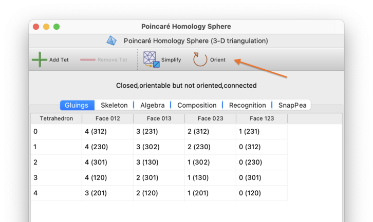
You can reorder the vertices of each tetrahedron to have the opposite orientation by selecting → from the menu. Regardless of whether the triangulation is orientable and/or oriented, every tetrahedron will have its orientation reversed. This will change the vertex numbers in each tetrahedron, but not the tetrahedron numbers themselves.
To convert a non-orientable triangulation into its orientable double cover, select →. If your triangulation has any orientable components, they will simply be duplicated.
You can puncture a 3-manifold triangulation; that is, remove a small ball from its interior and retriangulate. To do this, select →.
This will work correctly regardless of whether the triangulation is closed, ideal, and/or has real boundary triangles. There will be a new 2-sphere boundary, formed from two new boundary triangles.
You can also drill out a small regular neighbourhood of an edge of your triangulation. To do this, select →.
You will be asked which edge to drill out, as illustrated below. For each available edge, the drop-down list shows the edge number (as seen in the skeleton viewer), along with details of the individual tetrahedron edges that combine to form that edge of the triangulation. Boundary edges will not appear in this list, since drilling a boundary edge has no topological effect.
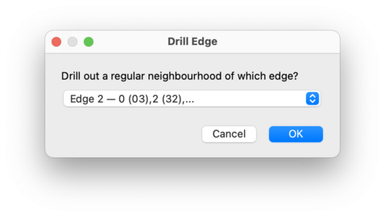
How Regina drills the edge will depend on the type of edge that you select:
Where possible, Regina will produce an ideal triangulation (so the new boundary component produced by the drilling becomes an ideal vertex in the resulting triangulation).
If necessary, Regina will create real boundary components (formed from unglued triangular faces of tetrahedra). This happens, for instance, when the edge runs between two distinct internal vertices (so the drilling produces a sphere boundary).
If drilling would have no topological effect at all, then Regina will do nothing, and instead show a message explaining why. This happens, for example, if the chosen edge connects an internal vertex to a boundary component (either real or ideal).
If the edge runs between two boundary components where at least one is real, then Regina will refuse to drill (since this could produce an enormous number of tetrahedra). You could try converting your triangulation to an ideal triangulation instead, since Regina will happily drill an edge between two ideal vertices.
You can combine two 3-manifold triangulations by forming their connected
sum. This will convert some triangulation X
into the connected sum
X # Y
for some other triangulation Y
(note that
Y is allowed to be the same as
X).
If both X and Y
are oriented triangulations then
the connected sum will respect these orientations, and will be
oriented also.
The triangulation X must be one of
Regina's native triangulation
packets, since
X will be modified directly.
The triangulation Y may be either a
native triangulation packet or a hybrid
SnapPea triangulation,
since Y will not be modified.
To form this connected sum, first open the the triangulation
X for editing, and then select
→
from the menu.
Regina will ask you which other triangulation to sum with;
in other words, Regina will ask you for the triangulation
Y.
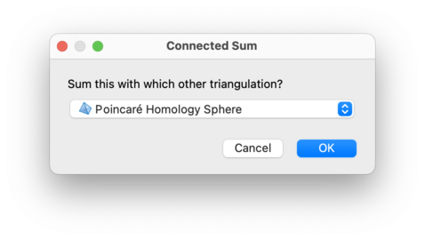
The triangulation X will be changed directly
into the connected sum. The result will most likely contain multiple
vertices, and you may wish to
simplify the resulting
triangulation before proceeding further.
If you have a normal surface in a 3-manifold triangulation, you can either cut along your surface or crush it to a point.
Cutting along a surface involves carefully slicing along the surface and retriangulating the resulting polyhedra. The resulting triangulation will have new real boundary component(s) corresponding to the original surface.
This operation has the advantages that it will never change the topology of the 3-manifold beyond the simple act of slicing along the surface, and it will never introduce ideal vertices or invalid edges.
The main drawback is that it can vastly increase the total number of tetrahedra. This has severe implications if you need to do anything computationally intensive with the resulting triangulation.
Crushing a surface is a potentially destructive operation, but when used carefully can be extremely powerful. The crushing operation was originally described by Jaco and Rubinstein [JR03]; see [Bur14b] for a simplified treatment. In essence, the surface is first collapsed to a point, and then any non-tetrahedron pieces that remain are “flattened away”.
One key advantage of crushing is that it always reduces the number of tetrahedra (unless you crush vertex links, in which case the triangulation stays the same).
The main disadvantage is that it can change the topology of your triangulation, sometimes dramatically. For example, it can create ideal vertices, undo connected sums, change the genus of boundary components, and delete entire summands. In some cases it can even make your triangulation invalid (for instance, edges might become identified with themselves in reverse).
You should only crush a surface when you have theoretical arguments that tell you exactly what might change and how to detect it. Examples of such arguments appear in [JR03], where crushing is used to great effect.
To cut along or crush a normal surface: open the list of normal surfaces, select your surface in the list, and then choose either → or →.
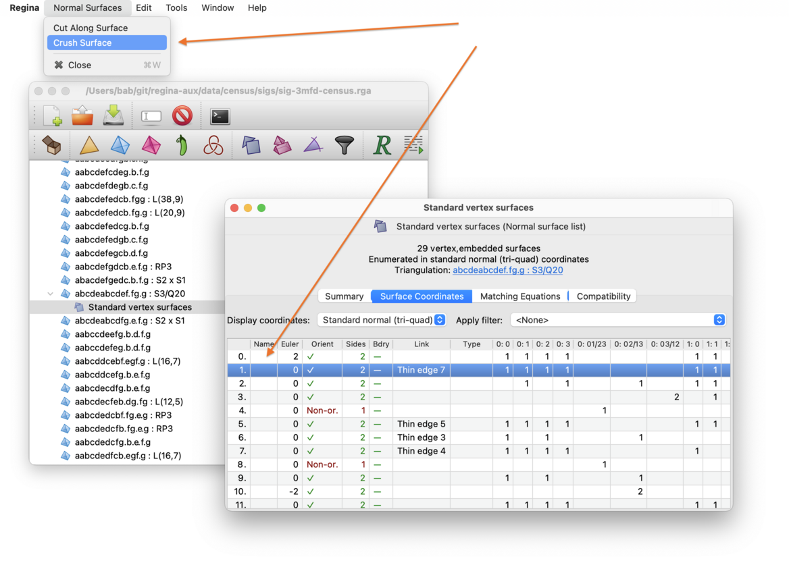
Regina will create a new triangulation where the surface has been cut along or crushed accordingly. This new trianguation will appear beneath the normal surfaces in the packet tree. Your original triangulation will not be changed.
Note that you could end up with a disconnected triangulation. If so, you can extract connected components to work with one at a time.
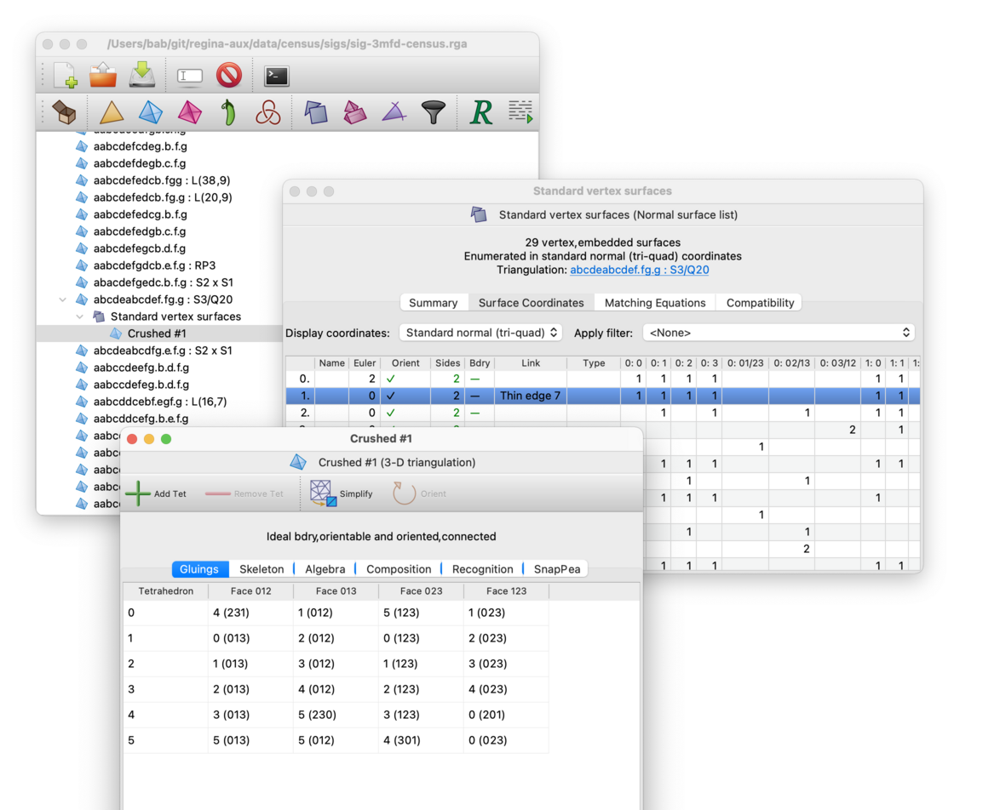
| Prev | Contents | Next |
| Analysis | Up | SnapPea Triangulations |